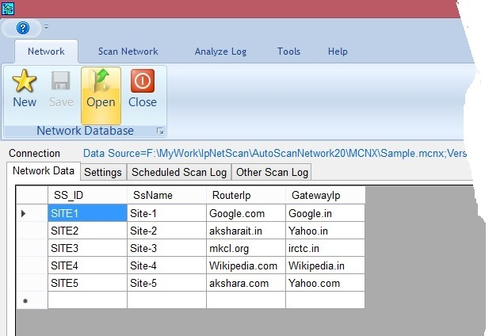

This tab is for managing the database file *.mcnx (i.e. MSETCL Communication/Computer Network Data file). Using respective button from this tab; you can create New *.mcnx file or Open an existing file or Save file after editing. The mcnx database file has tables as shown below. Data related with respective table get displayed into respective tab of workspace area. Where you can edit Network Data and Settings. Obviously Schedule Scan Log and Other Scan Log are read only
